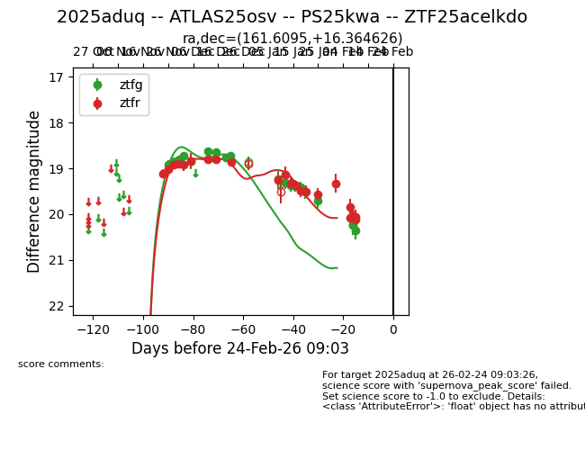
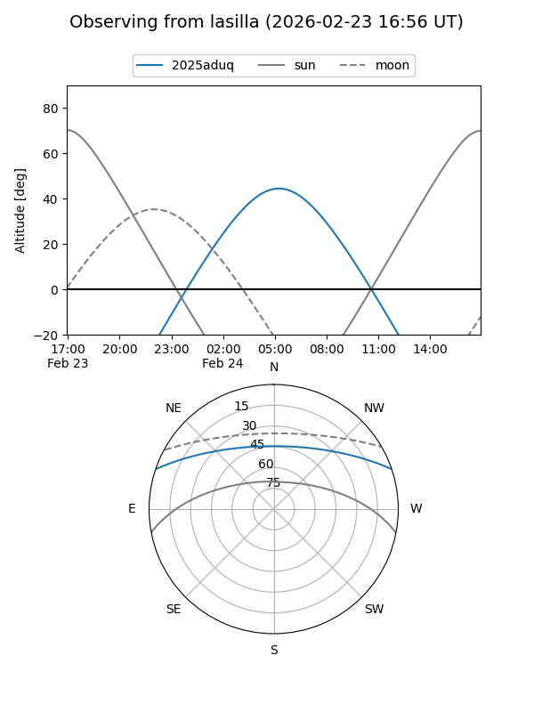
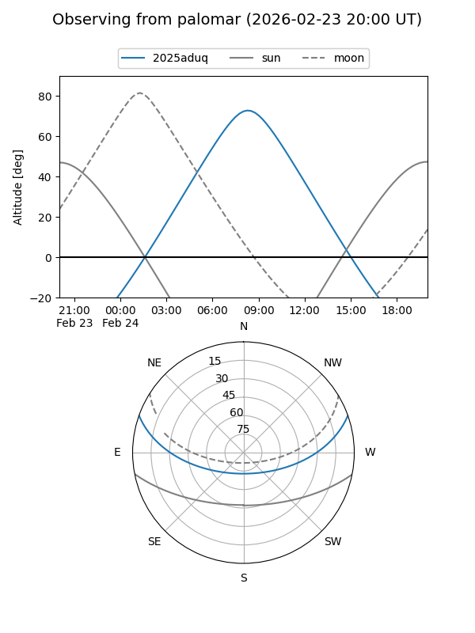
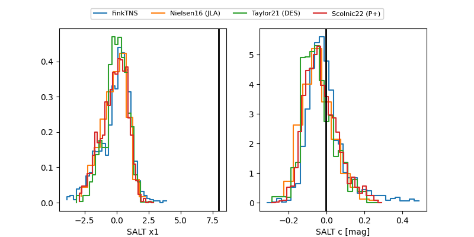

2025aduq
Target 2025aduq at 2026-01-16 11:00
Aliases and brokers:
FINK: link
Lasair: link
ALeRCE: link
TNS: link
YSE: link
alt names
ZTF25acelkdo (ztf,fink_ztf)
2025aduq (tns,yse)
ATLAS25osv (atlas)
PS25kwa (panstarrs)
Coordinates:
equatorial (ra, dec) = 161.6095,+16.36463
equatorial (HMS+DMS) = 10:46:26.28,+16:21:52.65
galactic (l, b) = (226.8425,+59.14976)
Flags:
Photometry:
last ztfg=19.38, ztfr=19.38
12 ztfg, 13 ztfr detections
Lightcurve

Visibility


Additional plots
